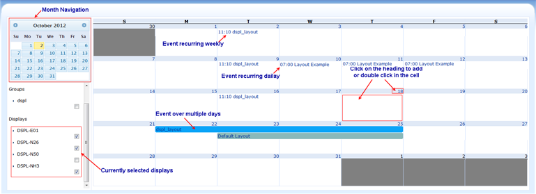

When you first navigate to the schedule page, either via the dashboard button or top navigation bar, a month calendar schedule chart is displayed.
From the calendar schedule chart you can:
An example of a month calendar schedule chart view is shown below:

Playlists that span over a day in length, are denoted by a coloured bar. This provides a visual representation of how many days that playlist has been scheduled across.
Xibo supports scheduling more than one layout at once using Campaign. The client will automatically alternate between the two layouts. Refer to Campaign Layout for detail.
Navigating
The calendar months chart view can be navigated using the Prev and Next links. They are on either side of the current calendar month window.
Display Views
The displays that are available for your selection are shown below the calendar month window.
Multiple displays may be selected. The Displays which are being selected, will have their scheduled events shown on the same month canlendar schedule chart. This allows you to change any display schedule that is selected and viewable to you.
Events
When a playlist is scheduled in Xibo it becomes an event.
Schedule & Edit Event
Events can be added to the month calendar schedule chart by double clicking on a day in the chart, or by clicking on the day heading. In either case, a form will load to collect the details for the new event (see Schedule & Edit Event).
To edit an event, click on that event and the "Edit Scheduled Event" form will be loaded. Except for the form title, both forms presents the same information for edit.